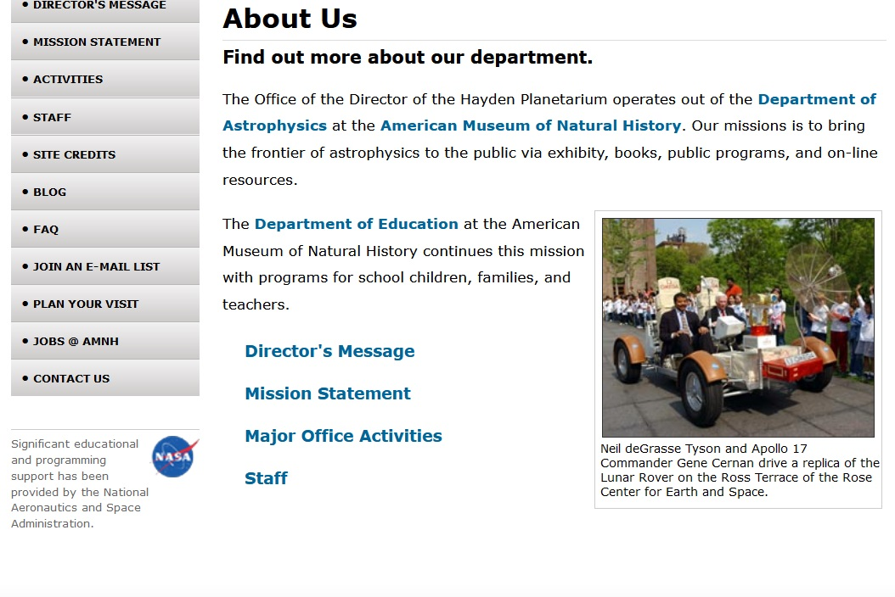
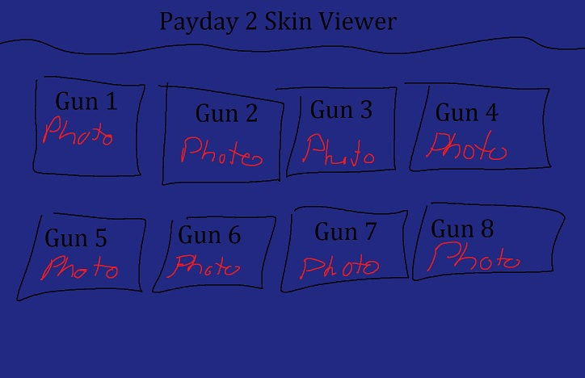
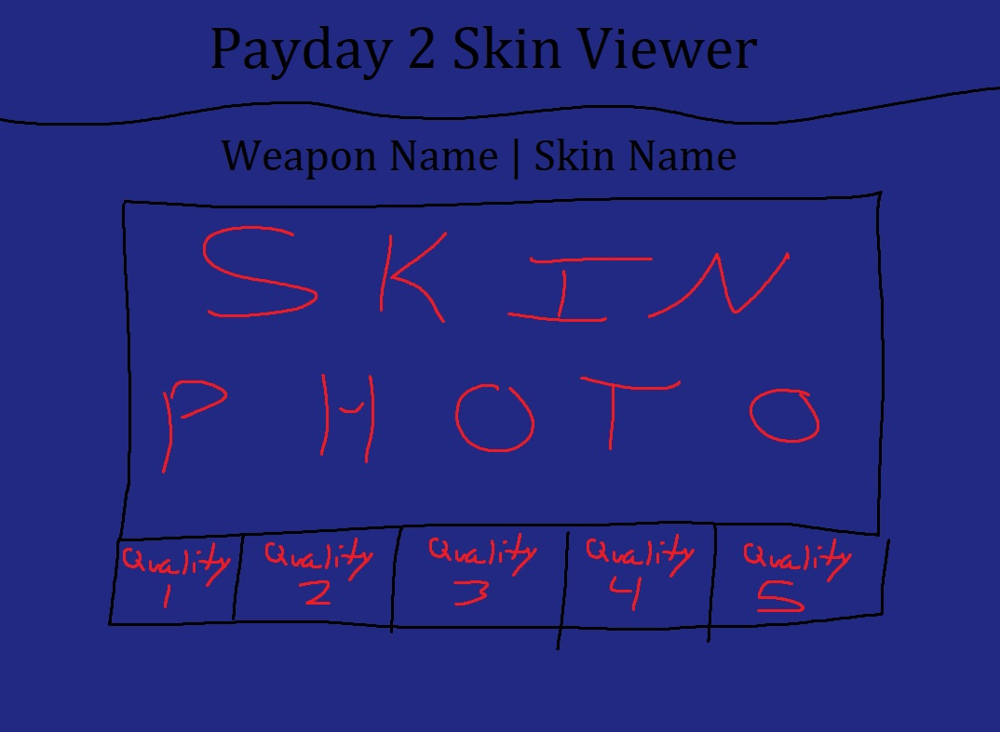

In Programming 2, throughout the term, we worked on creating various classes and files that contributed to this program. At first it was simply coding classes for functionality and storing data, but over the last several modules we focused on using Windows Forms with C# to create a usable program using the aforementioned classes. The first photo showcases one subwindow of the program, in which it takes in a variety of numbers from the user, as well as certain customization options the user enters, and provides the result of calculations based on the data. The second photo showcases the program's ability to work with databases. Cells can be modified, new data can be entered, data can be deleted, and it will update the database accordingly.
Web Development Website Project 1

The first project in Web Development has us attempt to recreate a webpage based purely on an image. The first photo showcases the top of the page, which required organizing a variety of images, a search bar, various links, as well as a sidebar. The second photo showcases lower down the page, with text formatted various ways, with an image positioned on the side next to text.
Future Project(s)
Payday 2 Skin Viewer Website


Over the summer I had the idea to make a website similar in function to CSGOStash, which is a website that allows users to see the weapon skins/recolours from the video game Counter Strike: Global Offensive. It sorts the guns and skins into separate pages, which allows users to see all the AK-47 skins, or all of the guns that a certain skin is on on a single page. I've attempted something like this in the past, but for the video game Killing Floor 2, which had an API that could be accessed and returned a JSON string with data on the games items. Assuming Payday 2 has an API that can return the data for all skins in a similar way, the skills learned in the Web Development course would greatly assist in creating this project. Shown above are two quick mockups (made in MS Paint) of what the website could look like, on both the main page, as well as a certain weapon/skin page.